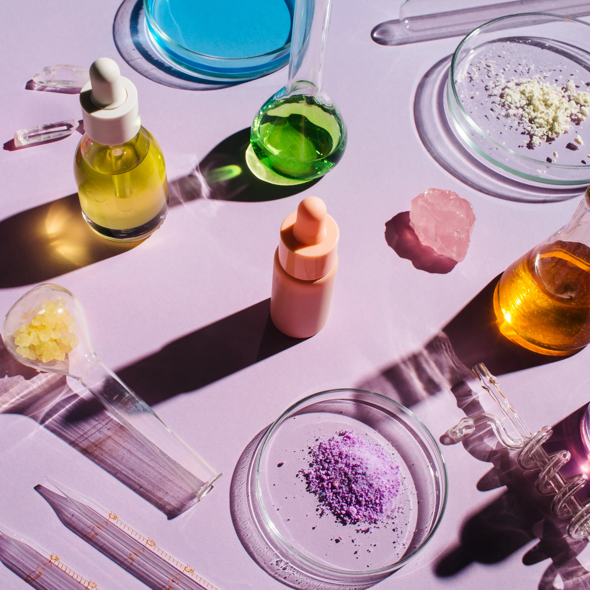

About Us
Our website, Glass Skin, is dedicated to educating individuals about skincare, helping them build effective routines, and promoting skin health awareness. Skincare isn't just about looks; it's about overall well-being and confidence. However, the abundance of skincare products and misinformation can be overwhelming. Our goal is to bridge this gap by providing a centralized hub for reliable skincare information.
One prevalent issue in the skincare space is the lack of guidance on combining different products safely, leading to potential skin irritation or worsening of concerns. Additionally, it may be overwhelming for users to build a weekly skincare routine, especially with so many different products on the market.
That's why Glass Skin aims to address these issues by empowering users with accurate skincare information. Whether you're a skincare enthusiast or a beginner, our website will take your skincare concerns and build a personalized skincare routine for you. Additionally, through our Compatibility Checker, users can check whether their skincare products can be used at the same time. Our goal is to serve as an educational resource to empower users to make informed skincare decisions, promote inclusivity and well-being in the skincare space.